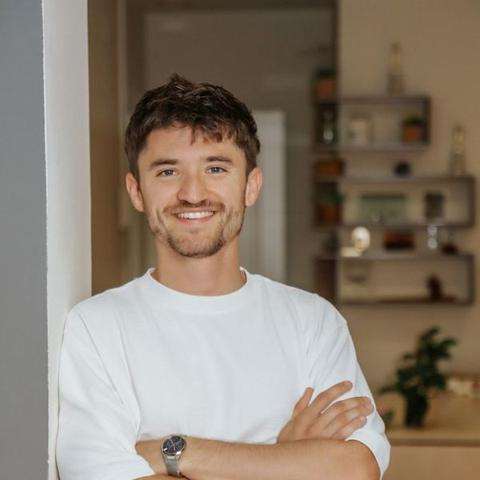

No vienes a que te arreglen. Vienes a encontrarte.
Soy Marc Hampshire, psicólogo Gestalt en Barcelona. Te acompaño a mirar lo que te pasa sin juicio y sin recetas, para que puedas vivir más desde quien eres y menos desde lo que se espera de ti. Presencial en el Eixample y online, en castellano, catalán o inglés.
Sin compromiso: para conocernos y ver si encajamos.
- Colegiado COPC nº 30868
- Presencial y online
- ES · CA · EN

MHEn Gestalt, la ley de cierre dice que la mente tiende a completar lo que queda abierto. En terapia pasa algo parecido con lo que no hemos cerrado.
Cómo trabajo
No estoy aquí para arreglarte como si fueras una máquina rota.
Creo que lo que cura no es una técnica, sino el encuentro entre dos personas que se atreven a estar presentes. Por eso en sesión no me escondo detrás de un papel: trabajamos con lo que pasa aquí y ahora, en ti, en mí y entre los dos.
No se trata de convertirte en una versión más correcta de ti, sino de poder mostrarte como eres, sin máscara, y desde ahí decidir cómo quieres vivir. Mi base es la terapia Gestalt, y la combino con herramientas de otros enfoques según lo que necesites.
La persona antes que la técnica
Las herramientas ayudan, pero lo que transforma es la relación. Por eso me muestro como persona, no solo como profesional.
La crisis también es una puerta
Lo que hoy te desborda suele señalar justo lo que pide ser atendido. No lo tapamos: lo escuchamos.
Sanar es una forma de vivir
No buscamos que encajes mejor, sino que vivas con más verdad, más presencia y también más disfrute.
Con qué te puedo ayudar
Trabajo con adolescentes, adultos y personas mayores. Estos son los motivos de consulta más habituales, aunque no hace falta que lo tuyo tenga nombre para empezar.
Relaciones
Patrones que se repiten en la pareja, la familia o las amistades. Dependencia emocional y codependencia.
Ansiedad y estrés
Cuando la cabeza no para y el cuerpo empieza a notarlo.
Adicciones
Alcohol, sustancias y otras conductas que se te han ido de las manos.
Autoestima
La voz crítica que no te deja en paz y la sensación de no ser suficiente.
Duelo
Pérdidas, rupturas y cambios que cuesta digerir.
Trauma
Experiencias pasadas que siguen pesando en el presente.
Hombres
Un espacio para hablar de lo que normalmente no se habla, en sesión individual o en grupo.
Patrones de personalidad
Formas de ser rígidas o rasgos narcisistas que te hacen sufrir a ti o a quienes te rodean.
Sesiones y precios
Las tres primeras sesiones duran una hora; después, entre 45 y 50 minutos. Todas pueden ser presenciales en Barcelona u online, en el idioma que prefieras.
Terapia individual
70 €Para adolescentes, adultos y mayores de 65.
Terapia de pareja
100 €Para parejas que quieren entender qué les pasa y cómo salir del mismo bucle.
Grupo de hombres
40 € / sesiónMartes cada dos semanas, de 18:30 a 20:00.
Si el precio es un obstáculo, coméntamelo: tengo tarifa adaptada.
Puedes pagar por transferencia, tarjeta, PayPal o en efectivo. Emito factura.
Cómo empezar
Una llamada para conocernos
Reserva 15 minutos gratis para contarme qué te trae. Si lo prefieres, escríbeme por WhatsApp.
Tres sesiones para conocernos
Las tres primeras duran una hora. Nos sirven para entender bien qué te pasa y qué necesitas.
Plan de tratamiento
En la cuarta sesión acordamos juntos hacia dónde vamos y cómo.
Seguimos
Sesiones de 45 a 50 minutos, con la frecuencia que acordemos.
Sobre mí
Soy psicólogo colegiado en el Col·legi Oficial de Psicologia de Catalunya, con un máster por la Universitat Autònoma de Barcelona y cinco años de práctica clínica.
Atiendo en castellano, catalán e inglés, en mi consulta de la calle Diputació y en Clínica ART. También conduzco un grupo terapéutico para hombres.
- COPCColegiado nº 30868
- UABMáster, 2021
- Cambridge C2Terapia en inglés
- 5 añosde práctica clínica
Hablemos
Dar el primer paso suele ser lo que más cuesta. Puedes reservar directamente o escribirme y te respondo lo antes posible.
- Teléfono y WhatsApp
- +34 624 08 03 67
- terapiaham@gmail.com
- También en Clínica ART
- Carrer de la Diputació 176, 08011 Barcelona
- Online
- Por videollamada, estés donde estés.